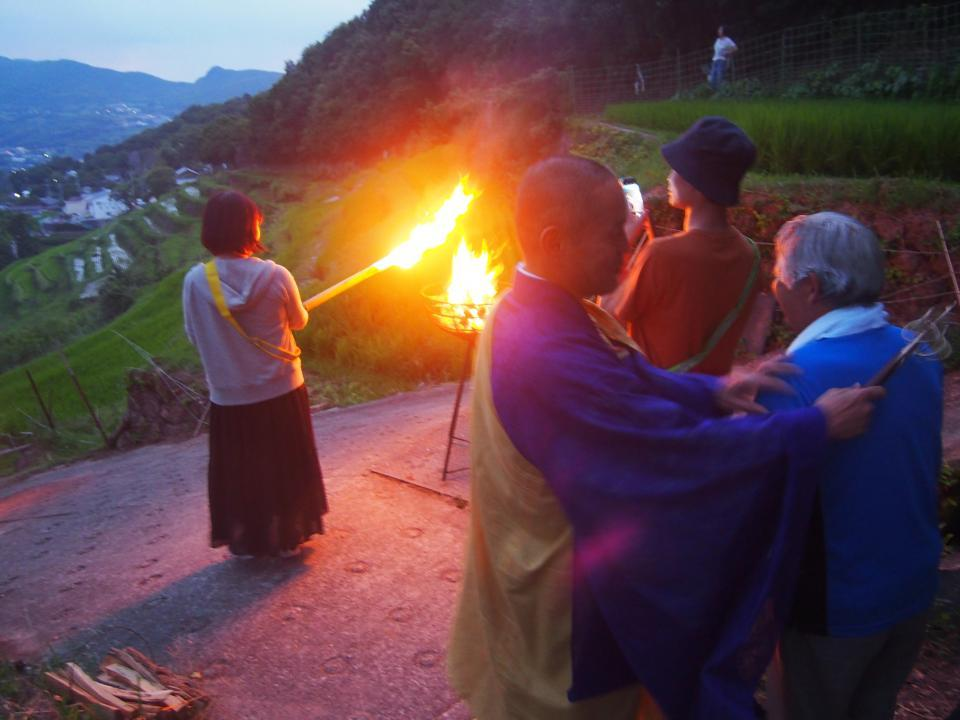

小豆島の伝統行事 中山虫送り<香川県小豆島>
琴平バス スペシャルツアー
コトバスツアーではなく、琴平バスのツアーです。琴平バスでは、着地型旅行（香川県・四国をご案内するツアー）をR&D事業部（新規事業部）を中心に企画・販売・運営しています。
小豆島の伝統行事 中山虫送りへ14名様 こえびガイドと一緒にご案内してきました。
小豆島 中山虫送り
虫送りは、約300年前から伝わる中山地区の伝統行事。
火手（ほて）と呼ばれる竹の松明を田にかざしながらあぜ道を歩き、害虫を退治、豊作を願います。
何年も途絶えていたこの伝統行事ですが日本アカデミー賞を12部門13賞を受賞した映画「八日目の蟬」の中でキーとなるシーンに「虫送り」が使われたことをきっかけに復活しました。
「とーもせ、灯せ。」の声かけが響き渡る千枚田。
火手の光が夕暮れの薄暗闇の中を照らす風景は、とても幻想的です。
食事も虫送りにこだわり！
昼食は、創作郷土料理 暦（こよみ）でミニコースいただきました。
「千本箸」という虫送りの際に食べられるお料理がコースには入っていました。
桶にうどんを入れて、大勢が輪になってすするというお料理で、今日は小豆島の名産・そうめんを使ったアレンジ。
お出汁は、イリコ出汁と大豆出汁の2種類。食べ比べも、みんなで桶をつつくのも楽しい。
そのほか、どれもこれも美味しいお料理で...一部抜粋。お刺身に、揚物はフグ。
こちらは郷土料理の「かきまぜごはん」。
炊いてあった具を白いご飯に混ぜていただきます。もちろん美味しい。
虫送りまでは小豆島観光
オリーブのリーゼントと名物おじさんの岩井さん。
オリーブのリーゼントをこよなく愛し、ピッカピカに磨きあげています。
オリーブ公園で魔女の宅急便のキキになりきってジャンプ！
参加者で撮りあいっこして、楽しい時間。
こちらは添乗員の山本＆こえびガイドの渡邉。カメラ好きのお客様にええカメラで撮ってもらいました。一発のジャンプで最高の1枚を、さすがです。
ワン・ウェンチー「小豆島の恋」は道路沿いからチラ見。緑が映えてきれいです！
伝統行事に参加
ツアーでは火手をもって歩く、カメラをとるを好きに選んでいただきました。中山の虫送りは2コースに分かれていて、いずれも殿川ダム下からシャトルバスで移動します。
１：小豆島霊場４４番札所湯舟山 → 中山春日神社
２：荒神社 → 中山春日神社
いずれも棚田の中を歩くので坂道ですが、２の方が少しなだらかです。
私は1コースについていってきました。
シャトルバスで参加者が約200名集まった後、湯舟山の本堂で祈祷。こちらは子供中心で本堂へ。種火を外でも祈祷、何重にも輪になった参加者が取り囲み、護摩木を炊き上げます。
もともとは子供が中心の行事ですが、今日は子供から大人まで、県内から遠くは東京から来た方も参加していました。
薄暗くなり始めたぐらいの、19時すぎから歩き始めました。「とーもせともせ」の掛け声が響き渡り、気が付くと私も一生懸命に声をだしていました。
間もなく火をつけるというところ。
自分で種火から火をつけて歩き出します。ちょっと緊張するポイント。
歩いている間はとれませんので、火手を回収されたところで撮影。
1コースはなかなかの傾斜で、ご年配の方は少ししんどいかもしれません。
スタート時は薄暗いくらいでしたが、降りるころにはすっかり日が落ちて、映画を思い出す風景に歩きながらジーンとなりました。
来年も行こう！次は農村歌舞伎もやってほしい！と嬉しいお声を多数いただきました。チャーター船を使わないと参加できない行事のツアーがほしいと！農村歌舞伎は考えてみたいですね～
夏会期はスペシャルツアー多数
「切腹ピストルズ「村をつくる」の巻@四国村」など、おすすめのイベントツアーがたくさんあります！バス会社ですが、船しか使わないツアーもあります（笑）ご参加お待ちしております！